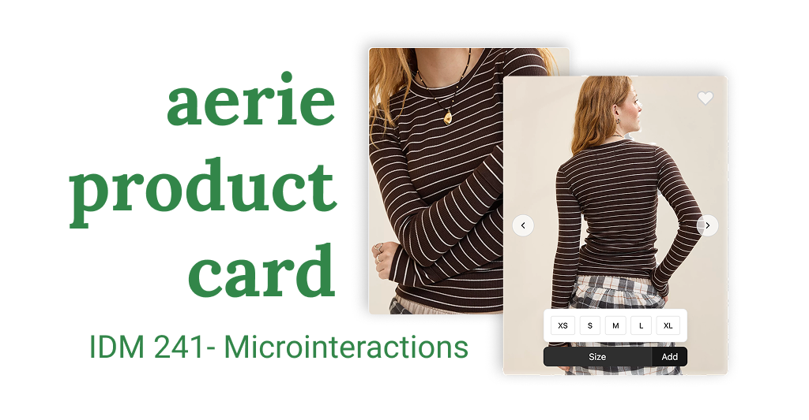
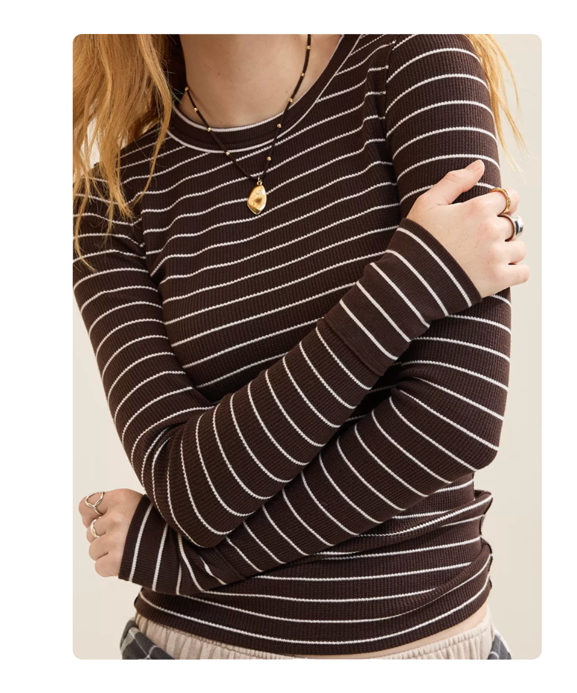
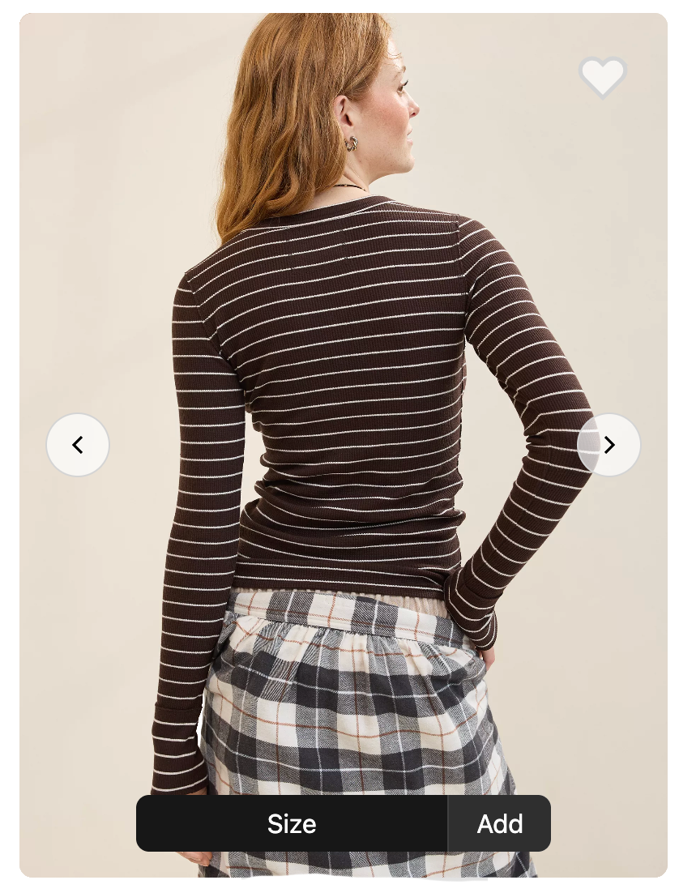
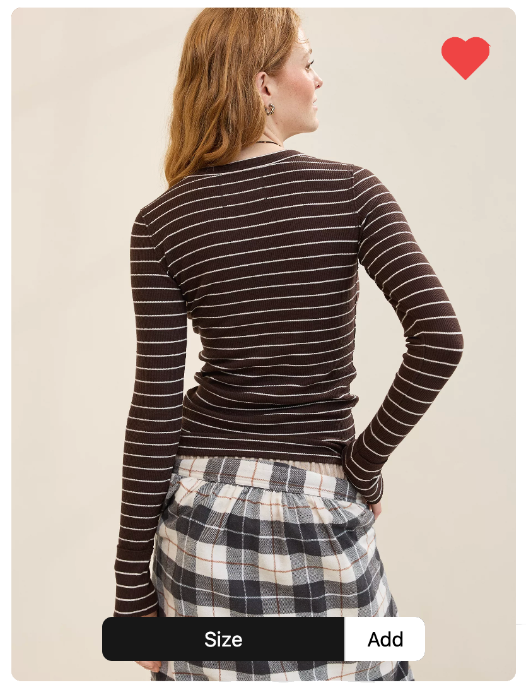
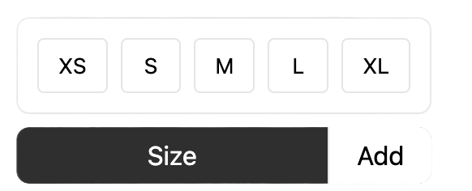

<html lang="en"></html>
<head>
  <meta charset="UTF-8">
  <meta name="viewport" content="width=device-width, initial-scale=1.0">
  <link rel="stylesheet" href="style.css">
  <title>Home</title>
</head>
<body>
  <nav>
    <ul>
        <li><a href="index.html">Home</a></li>
        <li><a href="alpha/index.html">Alpha Description</a></li>
        <li><a href="alpha/build/index.html">Alpha Build</a></li>
        <li><a href="beta/index.html">Beta Description</a></li>
        <li><a href="beta/">Beta Build</a></li>
      </ul>
      
  </nav>
  <div class="text">
    <h1>IDM 241 Case Study </h1>
  </div>
  <div>
    
  </div>

  <div>
  <h2>
    Overview
  </h2>
  <p>Aerie’s product cards play a key role in helping shoppers explore items quickly, but the existing interactions felt static and didn’t fully support decision-making. This project focused on enhancing the product card experience through micro-interactions that improve clarity, provide immediate feedback, and create a more engaging browsing flow. By refining states like hover, tap, color changes, and favoriting, the goal was to make product exploration feel smoother, more intuitive, and aligned with Aerie’s warm, playful brand identity.</p>
  </div>
  <h2>Context & Challenge</h2>
  <div>
    <h3>Background</h3>
    <p>Aerie is a lifestyle and intimates brand known for its inclusive sizing, comfort-first designs, and commitment to body positivity. The brand emphasizes authenticity and empowers customers through unretouched imagery and feel-good messaging.</p>
  </div>
  <div>
    <h3>Problem</h3>
    <p>Aerie’s product cards were visually strong but lacked micro-interactions that helped shoppers quickly understand product options and feel confident in their choices.</p>
  </div>
  <div>
    <h3>Goals & Objectives</h3>
    <ul>
      <li>Create purposeful microinteractions</li>
      <li>Interactions that make the experience quicker</li>
      <li>Easy comprehension with visual feedback</li>
    </ul>
  </div>
  <h2>Process & Insight</h2>
  <div class="solution">
    <h2>Solution</h2>
    
    
    
    
    
    <p></p>
  </div>
  <div>
    <h2>Results</h2>
    <p>
      This project was successful as I was able to improve the experience of this app and complete my objectives. 
      Visual feedback fills are given after the user clicks on or off the heart and the add to cart button. In addition gradual hovers are applied to every button to indicate hover state on a action button.
    </p>
  </div>
</body>